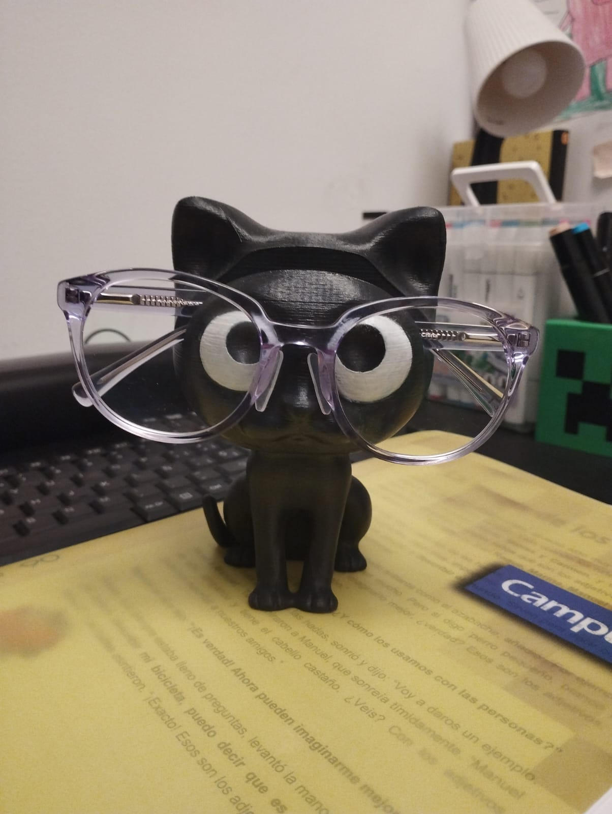
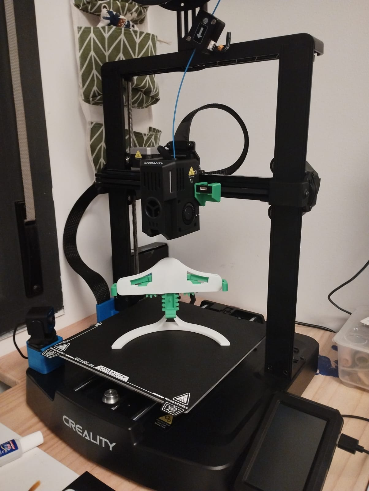

Proyectos 3d, aqui encontraras tutoriales
 Todas las impresiones mostradas, han sido realizadas tras varios ajustes, a veces, como es frecuente en este mundo, despuies de varias impresiones fallidas. Impresiones desde que abarcan desde juguetes hasta herramientas de carpinteria y diseño.
Informacion util
En estos tutoriales usamos la impresora Ender 3 v3 KE, sacamos el maximo rendimiento con el filamento Sunlu High Speed PLA, con un coste medio de 17€/kg, alcanzando velocidades de impresion de entre 300mm/s hasta un maximo de 600 mm/s.
Los STL fueron obtenidos de forma gratuita en estas páginas web:
- Thingiverse.com Descargue archivos y constrúyalos con su impresora 3D, cortadora láser o CNC.
- Cults3d.com Primer sitio independiente de archivos para impresoras 3D・Descarga los mejores objetos para impresión 3D・Comparte tus diseños con los makers de Cults3D.
- Printables.com Sitio comunitario para usuarios de impresoras 3D. Descubre miles de magníficos modelos 3D imprimibles, descárgalos gratis y lee artículos interesantes.
- Crealitycloud.com Creality Cloud es la primera plataforma de impresión 3D todo en uno del mundo que ofrece comercio de modelos 3D, corte en la nube e impresoras 3D con control remoto en impresoras de la marca Creality, por ejemplo mi Ender V3 KE
Aarón Gómez
Ciclo formativo de grado superior en Administración de sistemas informáticos.
(IFCD0210) Certificación profesional en Desarrollo de aplicaciones con tecnologia web 2014 (RD 1531/2011, de 31 de octubre por el RD 628/2013, de 2 de agosto).
Sobre mi
Generación Y, Millennial, a mis 40 años cargo a mis espaldas ser la ultima generacion que uso el analógico y ser la primera en vivir a diario con la era digital. Descubrir la tecnologia táctil, y ver avazar todo a pasos de gigante.
La mejor descripcion viene por Google:
Desde temprana edad, los Millennials han adoptado y adaptado nuevas tecnologías, lo que los convierte en auténticos nativos digitales. Esta familiaridad con la tecnología les ha permitido estar siempre a la vanguardia en el uso de dispositivos móviles, redes sociales y plataformas digitales, cambiando la forma en que nos comunicamos, trabajamos y vivimos.
Valores y Perspectivas
Los Millennials valoran la autenticidad, la transparencia y la responsabilidad social. Son defensores del cambio y la innovación, buscando constantemente nuevas formas de mejorar el mundo a su alrededor. Prefieren las experiencias sobre las posesiones materiales y priorizan el equilibrio entre la vida laboral y personal.
Mi primer ordenador, un Pentium 100, 8 mb de RAM, sus sustema era esa pantalla negra, que hoy en dia es el CMD, esas interminables lineas de codigo para crear carpetas, para instalar juegos, o inciar ese primer Windows 3.11 que instale con 1 diskete pirata.
Experiencia laboral
- Ejecito de tierra, Brigada de montaña (2003-2005)
- Trabajos en la cosntrucción y como camarero en barias empresas mientras estudiaba nuevamente.(2006-2008)
- Tecnico Instalador en Digicom Telecomunicaciones(2008-2012)
- Responsable técnico para Tiendas Comunicalia(2014-2016)
- Helpdesk informático para Madison Telecyl, empresa Telecable(2016-2017)
- Tecnico Instalador de sistemas de seguridad en Prosegur Alarmas(2017-2021)
- Tecnico Instalador y mantenedor de PCI y seguridad en Keeper Galicia(2021-actualmente)
Imágenes y videos de proyectos
Videos timeLapse
Impresion juego Quarto material PLA verde, impreso a 0,20 grosor capa, velocidad contronos 150mm/s, reyeno interior 300mm/s, 15% relleno.
Impresion soportes para gorras de pared, PLA azul impreso con altura de capa a 0,14, velocidad contronos 150mm/s, reyeno interior 300mm/s, 60% relleno (para dar consistencia).
Soporte para movil PLA Blanco marca Creatily, filamento baja velocidad, impreso a 0,20 grosor capa, velocidad contronos 60mm/s, reyeno interior 75mm/s, 15% relleno, con alisado superior.
Lampara antorcha minecraft con filamento PLA blaco marca Creatily, impreso a 0,20 grosor capa, vvelocidad contronos 60mm/s, reyeno interior 75mm/s, 15% relleno. impresion de 3 piezas mas soporte, adapatado interior para portabombillas e14 led de IKEA y pintado con Spray y acrilicas. Lacado con barniz satinado
Imágenes de algunos proyectos